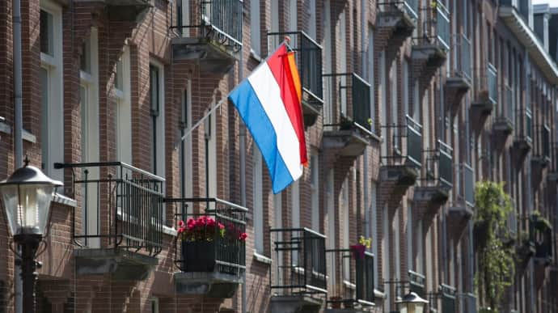
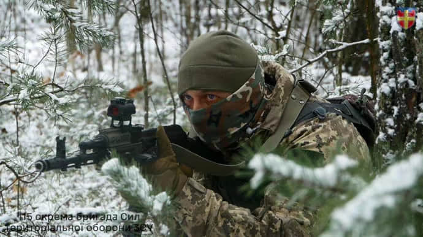

У Німеччині достроково завершиться масштабний страйк залізничників
Німецька профспілка машиністів поїздів GDL погодилася достроково припинити страйк і повернутися до роботи раніше, ніж планувала.
Про це повідомляє "Європейська правда" з посиланням на DW.
Страйк залізничників у Німеччині почався 24 січня й мав завершитись лише ввечері 29-го, ставши найдовшим в історії. Натомість вони погодились повернутись на роботу о 02:00 в понеділок.
Це вже четвертий залізничний страйк у Німеччині з листопада 2023 року на тлі ескалації суперечки між профспілкою машиністів GDL та залізничним концерном Deutsche Bahn щодо заробітної плати та робочого часу.

Нідерланди долучилися до ІТ-коаліції на підтримку ЗСУ
Нідерланди на засіданні Контактної групи з питань оборони України оголосили, що долучаться до "ІТ-коаліції", спрямованої на допомогу розбудові цифрових та кіберспроможностей ЗСУ.
Джерело: повідомлення Міністерства оборони України, яке наводить "Європейська правда"
Разом із приєднанням до ІТ-коаліції Нідерланди зробили внесок у розмірі 10 мільйонів євро. А Данія, яка вже входить до її складу, вирішила надати понад 12 мільйонів євро для цієї мети.
ІТ-коаліція – це спеціальна група держав у межах Контактної групи з питань оборони України під керівництвом Естонії та Люксембургу. Її метою є підтримка Міністерства оборони України та Збройних Сил України у сфері ІТ, зв’язку та кібербезпеки.

Україна та Литва обговорили спільне виробництво дронів
Міністри закордонних справ України та Литви Дмитро Кулеба та Габріелюс Ландсбергіс під час візиту останнього до Києва 27 січня обговорили насамперед спільне оборонне виробництво.
Джерело: Кулеба оголосив на спільній пресконференції з Ландсбергісом, "Європейська правда"
Деталі: За словами голови українського МЗС, "велику частину нашої розмови ми присвятили визначенню спільних кроків для нарощування виробництва дронів для потреб Збройних Сил України".

Ще майже 800 російських військових знищені в Україні
Сили оборони за добу знищили ще 770 росіян, 15 їхніх броньованих машин та 3 артсистеми.
Джерело: Генштаб
Деталі: Загальні бойові втрати противника з 24.02.22 по 27.01.24 орієнтовно склали:
особового складу ‒ близько 381370 (+770) осіб,
танків ‒ 6271 (+6) од,
бойових броньованих машин ‒ 11652 (+15) од,
артилерійських систем – 9085 (+3) од,
РСЗВ – 972 (+0) од,
засоби ППО ‒ 660 (+0) од,
літаків – 331 (+0) од,
гелікоптерів – 324 (+0) од,
БПЛА оперативно-тактичного рівня – 7037 (+4),
крилаті ракети ‒ 1845 (+0),
кораблі /катери ‒ 23 (+0) од,
підводні човни - 1 (+0) од,
автомобільної техніки та автоцистерн – 12072 (+8) од,
спеціальна техніка ‒ 1433 (+8)
Дані уточнюються.